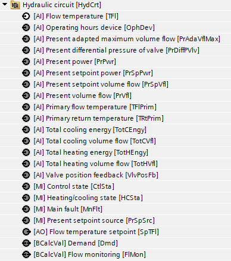
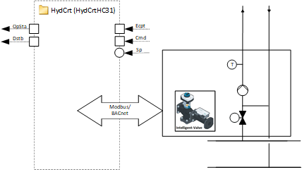
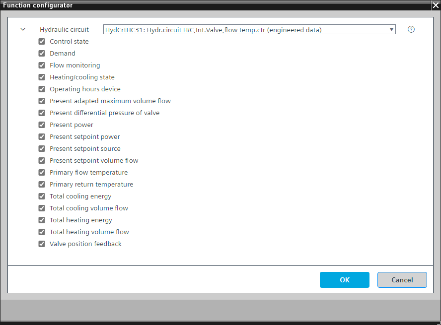

[HydCrtHC31] 加热液压回路/cooling、智能阀、流量温度控制器
Program block, name / node subtype: [HydCrtHC31] Hydraulic circuit for heating/cooling, Intelligent Valve, flow temperature controller
Library hierarchy: Heating equipment
Family: HydCrtH
项目树 | 图表 |
|---|---|
|
 |  |
Configurator


程序块存储在没有 I/Os. 的库中 使用auto-create and auto-connect函数创建 I/Os 和 /or 将它们连接到接口块，例如 R_A、CMD_B。或者，从包含库中预定义 I/Os 的文件夹中取出 I/Os，并从工厂中取出 /or，并将它们连接到接口块。
带智能阀的加热液压回路/cooling
姓名 | 描述 | 类型 | 报警/通知类 | 趋势/类型 | |
|---|---|---|---|---|---|
SpTFl | Flow temperature setpoint | AO：模拟输出 | No | 是的，3 | |
MnFlt | Main fault | MI：多态输入 | 是的，6 | No | |
姓名 | 描述 | 类型 | 报警/通知类 | 趋势/类型 |
|---|---|---|---|---|
|
PrSpSrc | Present setpoint source | MI：多态输入 | 是的，6 | No |
Dmd | Demand | BCalcVal: Binary calculated value | No | No |
PrVfl | Present volume flow | AI：模拟输入 | No | 是的，2 |
属于该元素的其他元素： FlMon | Flow monitoring | BCalcVal: Binary calculated value|警报：有|Notification class 4 | ||||
VlvPosFb | Valve position feedback | AI：模拟输入 | No | 是的，1 |
TFlPrim | Primary flow temperature | AI：模拟输入 | No | 是的，2 |
TRtPrim | Primary return temperature | AI：模拟输入 | No | 是的，2 |
PrDiffPVlv | Present differential pressure of valve | AI：模拟输入 | No | 是的，2 |
PrPwr | Present power | AI：模拟输入 | No | 是的，2 |
OphDev | Operating hours device | AI：模拟输入 | No | No |
PrSpVfl | Present setpoint volume flow | AI：模拟输入 | No | 是的，2 |
PrSpPwr | Present setpoint power | AI：模拟输入 | No | 是的，2 |
CtlSta | Control state | MI：多态输入 | No | No |
TotHVfl | Total heating volume flow | AI：模拟输入 | No | No |
TotHEngy | Total heating energy | AI：模拟输入 | No | No |
PrAdaVflMax | Present adapted maximum volume flow | AI：模拟输入 | No | 是的，2 |
TotCVfl | Total cooling volume flow | AI：模拟输入 | No | No |
TotCEngy | Total cooling energy | AI：模拟输入 | No | No |
HCSta | Heating/cooling state | MI：多态输入 | No | No |
Additional options
描述 |
|---|
|
Maximum volume flow |
Minimum volume flow |
Self-test result |